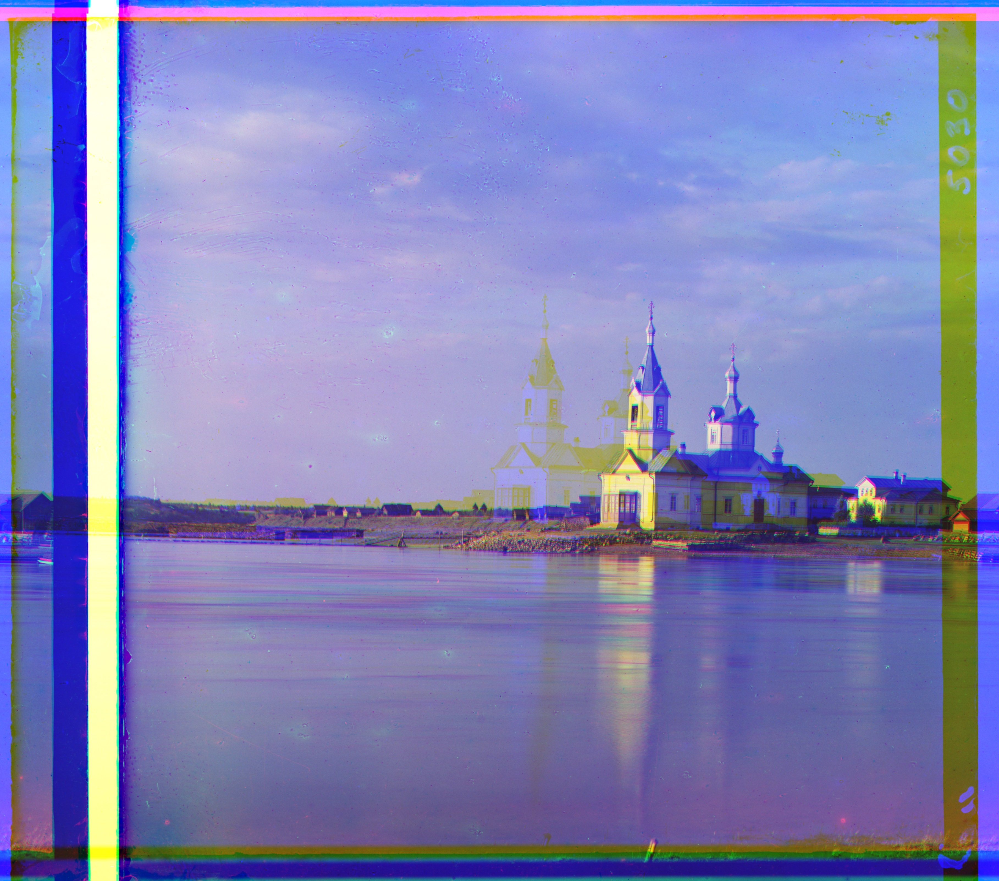
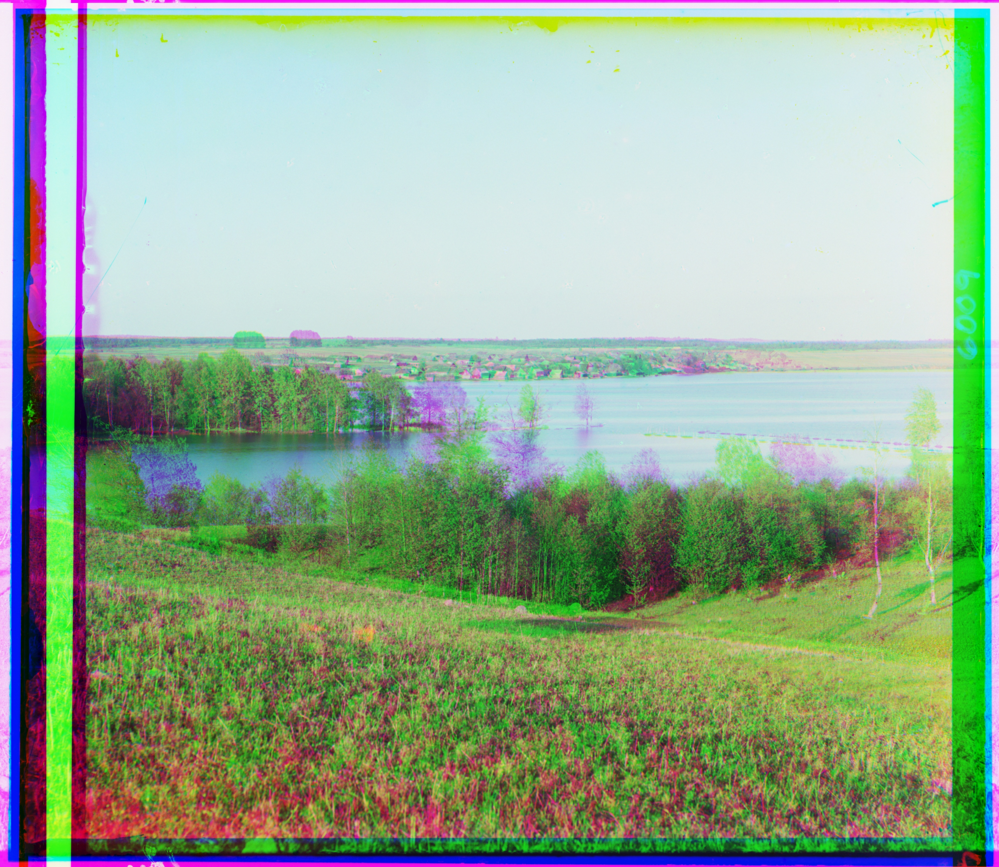
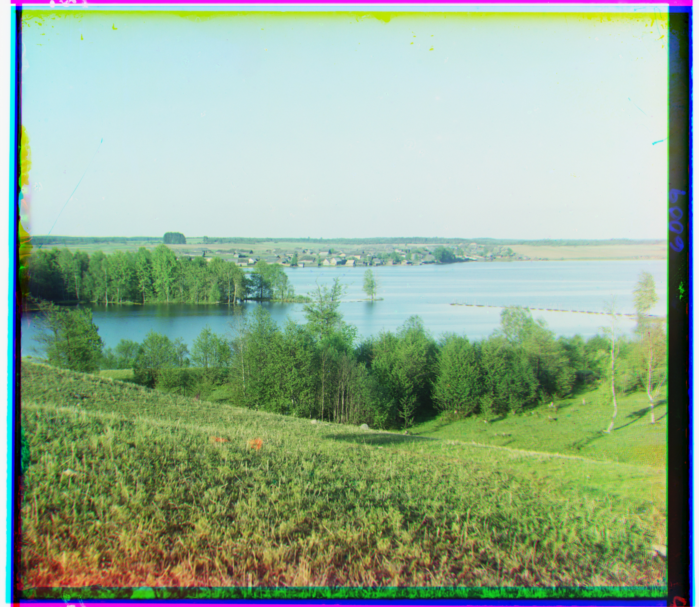
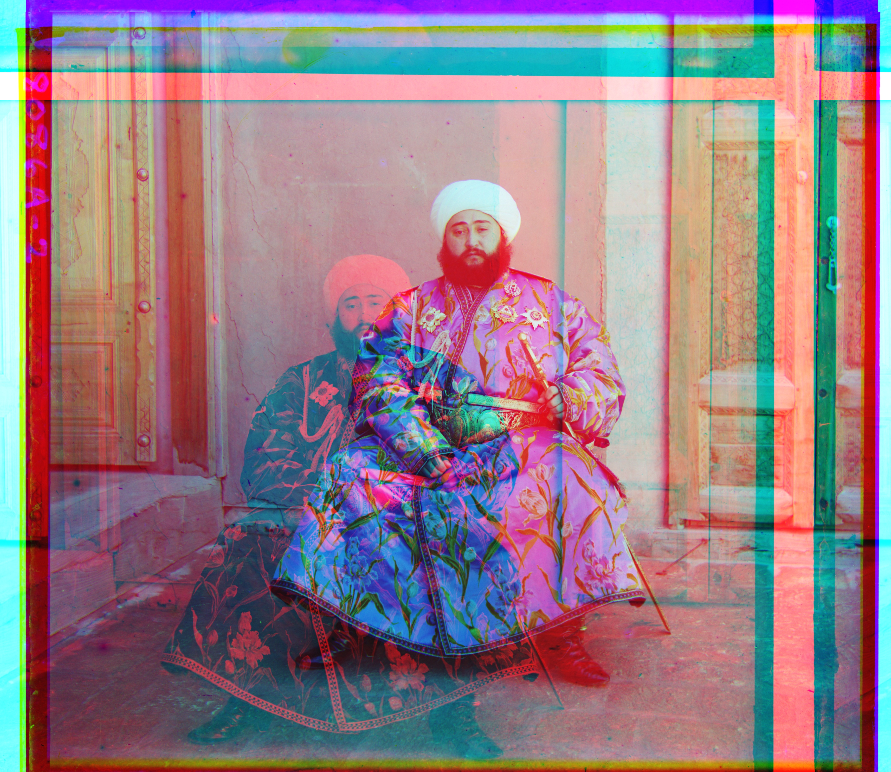
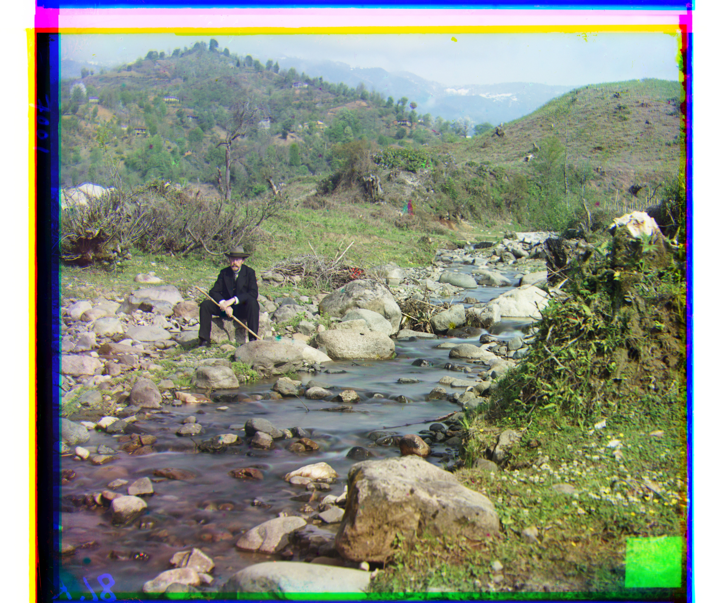
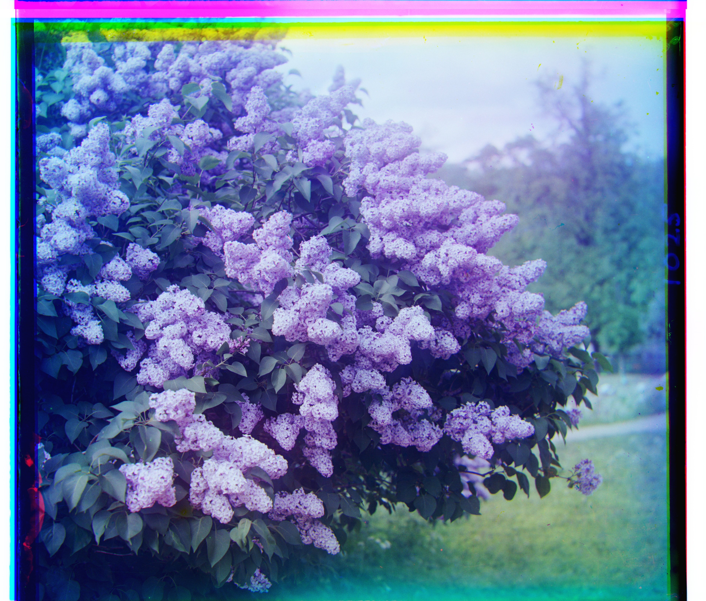
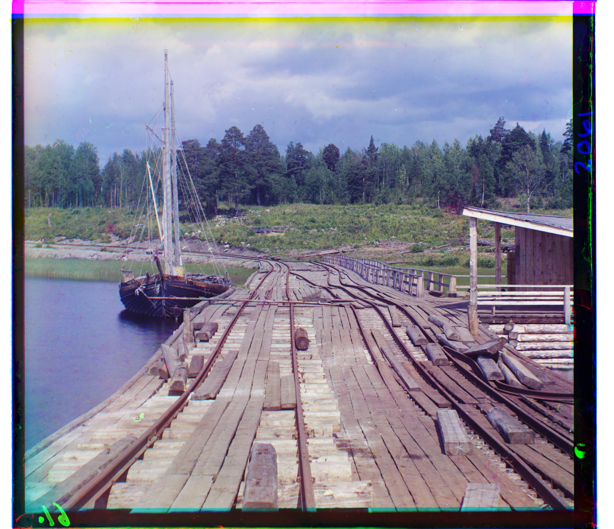
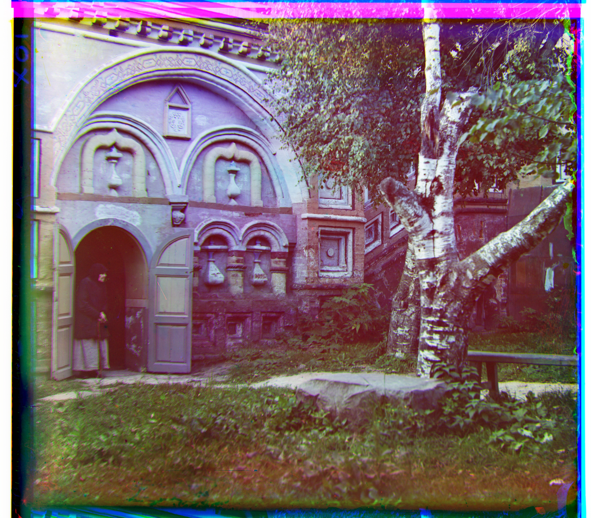
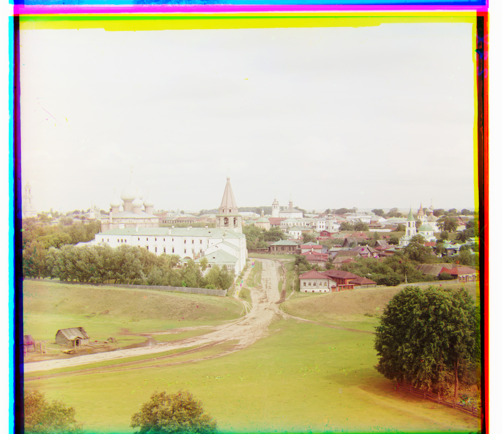

Alexander Tsai · CS180
The objective of this assignment was to combine a blue, green, and red exposure into a single color image. Each input is a grayscale image with the three exposures stacked vertically in B, G, R order. My program utilised some of the boilerplate code provided and split the input into three equal parts. I then aligned the green and red channels against blue, and combined them into all into an RGB image.
Before aligning, I convert the pixel values to floats between 0 and 1. My final method is pyramid alignment using NCC.
I started with a simple implementation where I search every horizontal and vertical shift from −15 to +15 pixels. This is because images can be misaligned in any direction. For each shift, I use Euclidean distance (L2) to compare the channels and keep the shift with the lowest score.
for v_dis in range(-max_dis, max_dis + 1):
for h_dis in range(-max_dis, max_dis + 1):
candidate = moving[
margin - v_dis:h - margin - v_dis,
margin - h_dis:w - margin - h_dis,
]
diff = np.sqrt(np.sum((target - candidate) ** 2))
if diff < min_diff:
min_diff = diff
v_best, h_best = v_dis, h_dis
I ignore the borders when comparing the channels because they can interfere with the alignment. I leave out a margin on all four sides when scoring. In the code, this is max(max_dis, int(min(h, w) * 0.1)). For example, if a channel is 300 × 400 pixels and the search radius is 15, the margin is 30 pixels. I included this to exclude the large black borders I noticed in each image.
Below are the single-scale L2 results for Cathedral, Monastery, and Tobolsk.
| Image | Green (x, y) | Red (x, y) | Total time (s) |
|---|---|---|---|
| Cathedral | (2, 5) | (3, 12) | 0.066 |
| Monastery | (2, -3) | (2, 3) | 0.067 |
| Tobolsk | (3, 3) | (3, 6) | 0.072 |
For large TIFF files, repeating the previous naive approach would be expensive. Hence, I switch to using an image pyramid to estimate the shifts on smaller images and progressively refine them.
At each level, I use a 3 × 3 box average for smoothing, then downsample by literally taking every second row and column. Smoothing helps reduce aliasing before downsampling. At the smaller levels, calculating a metric like NCC is computationally cheaper because there are simply fewer pixel values involved.
def downsample(image):
return image[::2, ::2]
smaller = downsample(blur_image(image))
I repeat this recursively until the channel height is below 200 pixels (determined experimentally), then run the original ±15-pixel search. As I return to each larger image, I double the shift because the resolution doubles, then search another ±5 pixels around that estimate to refine the alignment. I use a window size of 5 pixels to reduce computational strain.
v_best, h_best = 2 * v_best, 2 * h_best
moving = np.roll(moving, (v_best, h_best), axis=(0, 1))
v_diff, h_diff = calc_diff(reference, moving, max_dis=5, ncc=True)[1:]
return v_best + v_diff, h_best + h_diff
Finally, I apply the shifts to the original images and combine the channels.
Initially, I used L2 since the implementation was easy. However, I realized there were issues with Church and Novinki. Each exposure was taken through a different color filter. For example, a blue object can look bright in the blue exposure but dark in the red exposure, even at the correct alignment. L2 directly compares these brightness pixel values and ultimately did not perform well.
After switching to normalized cross-correlation (NCC), I saw these issues go away. My analysis is that NCC fixes these brightness issues and normalizes each region before comparing them. This makes it less sensitive to overall brightness and contrast differences. I use the negative correlation so that the existing search still picks the lowest score.
target = target - target.mean()
target = target / (np.sqrt(np.sum(target ** 2)) + 1e-8) # 1e-8 avoids division by zero
candidate = candidate - candidate.mean()
candidate = candidate / (np.sqrt(np.sum(candidate ** 2)) + 1e-8)
diff = -np.sum(target * candidate)




Below are the NCC pyramid results for all 14 supplied images and three additional images I selected from the Library of Congress collection. I use the full-size files and the same settings for every image. The offsets are listed as (x, y), where positive x shifts right and positive y shifts down. Total time was measured on a M5 Macbook Pro.











Emir still fails. We can observe that the red channel has moved to the wrong position. NCC can handle one exposure being brighter overall, but it cannot fully handle individual objects changing brightness differently between exposures. For example, Emir's blue clothing can look bright through the blue filter and dark through the red filter, while other parts of the scene behave differently. Interestingly enough, experiments showed that the L2 had better results than NCC for Emir.
{kind=link}
{kind=link}
{kind=link}
{kind=link}
{kind=link}
{kind=link}
{kind=link}
{kind=link}
{kind=link}